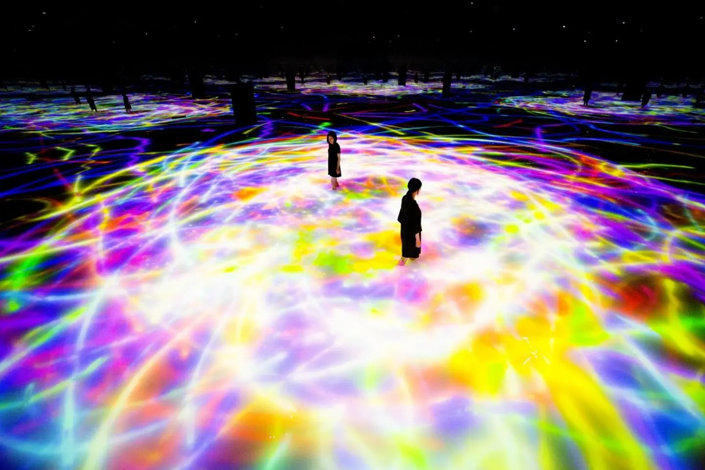

路线总览（v4）
逐日行程
12/31 周四
抵达日 — 只睡觉
- 21:30 落羽田 T3，出关约 22:30–23:00
- 京急电车 13 分钟直达品川（末班 00:08，时间充裕）
- 入住品川酒店 1 晚，洗洗睡

1/1 周五
teamLab 早场 → 南下伊东
- 上午：teamLab Planets（丰洲）早场 — 赤脚涉水的沉浸光影展，新年期间 8:00 开门，约 9:00 进场、10:30 出来，人最少（可砍，砍掉就睡醒直接南下）
- 中午：品川坐「踊り子号」特急，约 13:00 到伊东
- 下午：小室山轻徒步（缆车+山顶海景咖啡）或伊东海岸散步
- 傍晚：入住温泉旅馆，晚餐金目鲷，泡第一汤（包场露天风吕）

1/2 周六
大室山 — 环火山口看富士山
- 缆椅登顶（大室山禁止徒步登山），沿火山口走一圈约 1km / 40 分钟
- 冬季是全年富士山能见度最高的季节
- 山脚就是仙人掌动物公园（见下）

1/2 周六
城崎海岸徒步 — 本趟主菜
- 桥立吊桥 → 门胁吊桥：约 5km / 2.5–3 小时海岸步道
- 熔岩悬崖、松林、海蚀地貌，运动鞋即可
- 走完从城崎海岸站坐伊豆急行回伊东

1/2 周六 · 取舍项
水豚泡温泉 + 伊豆高原灯光秀
- 伊豆仙人掌动物公园：水豚露天风吕是冬季限定（本季 2026-11-21 至 2027-04-04）
- ⚠️ 若全程走海岸线徒步，下午 13:30 的水豚场次赶不上 — 徒步和水豚二选一，或徒步缩短为吊桥周边散策版
- 天黑后：伊豆高原 Gran Illumi 灯光秀（开到 21:30），回伊东泡第二汤
1/3 周日
回东京 — 购物日
- 上午：伊东坐「踊り子号」北上（1/3 是返程高峰，必须上午走 + 提前抢指定席），中午到东京
- 下午–晚上：银座 / 新宿购物 — 1/3 是百货新年初卖折扣季，商场全开，比元旦当天和机场免税店划算
- 晚上：丸之内灯饰散步或早点回酒店休息，攒体力给返程日
- 东京住 1 晚（品川或银座一带，待定）
- 注：晴空塔 2017 年已去过，本趟不排（富士山展望由大室山/城崎海岸覆盖，无非去不可的新理由）
1/4 周一
补买 + 回家
- 睡到自然醒，酒店周边补买伴手礼
- 12:00 左右出发去羽田，机场免税店最后补货
- 15:00 起飞回北京
徒步线全分析（六条）
| 路线 | 数据 | 看点与条件 | 结论 |
|---|---|---|---|
| 城崎海岸线（伊豆） | 约 5km / 2.5–3h，起伏步道 | 熔岩悬崖+两座吊桥，伊豆东海岸代表路线；伊东出发当天往返 | ✅ 主推，排 1/2 |
| 大室山环口 | 约 1km / 40 分钟，平坦 | 缆椅上山，环火山口一周；冬季富士山能见度全年最高 | ✅ 排 1/2 上午 |
| 小室山（伊东） | 约 1h，缆车+山顶环路 | 海景咖啡，强度最低 | ✅ 排 1/1 下午 |
| 天城山（百名山） | 环线 8.1km / 爬升 705m / 约 5h | 冬季公交结构性不合：巴士一天 3 班、始发到登山口 8:50 已过官方 8:00 入山建议线；山顶 1 月平均 -0.5°C，需轻冰爪。只能租车整日，砍掉 1/2 全部其他安排 | 🔀 备选（不推荐） |
| 城之岛（三浦半岛） | 约 3km / 2h；品川往返车程约 3.5h | 海蚀拱门+灯塔+三崎金枪鱼都很好，但与伊东反方向，v4 结构里没有半天能塞进去 | ❌ 本趟放弃 |
| 高尾山（东京） | 东京出发约 1h | 1/1–1/3 山顶寺院初诣人流为关东顶级规模，缆车排队以小时计，主路线终点即寺院 | ❌ 本趟不排 |
需要一起拍板的事
决策点 1（1/1）：teamLab 早场去不去？去 = 8 点起床赶早场；不去 = 睡到自然醒直接南下伊东。
决策点 2（1/2）：城崎海岸线 5km 全程徒步（放弃水豚场次）？还是保留水豚、海岸只走散策版？天城山整日登山版也在桌上（租车+冰爪，砍全天其他安排）。
决策点 3（1/3 住哪）：东京最后一晚住品川（去羽田 13 分钟）还是银座一带（下楼就是购物区，去羽田约 40 分钟）？
住宿（已实查）
- 伊东（1/1–1/3，2 晚）— 首选：かめや楽寛（Kameya Rakan）2 晚 ¥77,140（约 ¥1,775 人民币/晚，预算内）：伊东站步行 3 分钟、禁烟海景和室 10 叠，4 个可预约的包场露天风吕（方案含 1 次 45 分钟免费包场，另有 1 个免费免预约包场池）。无餐，吃饭在伊东站周边解决。余房尚多（1/1 剩 12 间、1/2 剩 15 间）
- 伊东同日期其他结果：游季亭 1/1–1/3 已售罄；聚乐 ¥220,400（超预算 1 倍多）
- 东京（12/31 品川 1 晚 + 1/3 1 晚）：待订，1/3 地点见决策点 3
订票时间点（别错过）
- 12 月 1 日 10:00（日本时间）：1/1 南下「踊り子号」指定席开售（年末年始全车指定席，必须抢）
- 12 月 3 日 10:00（日本时间）：1/3 回东京车次开售（当天是返程最高峰，越早抢越好）
- teamLab Planets 1/1 早场票：开放预订后第一时间买 9:00 左右场次